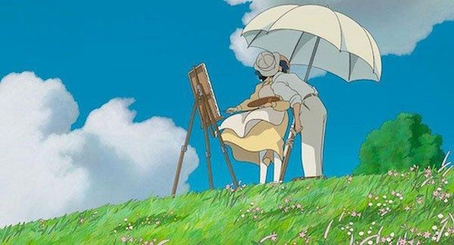
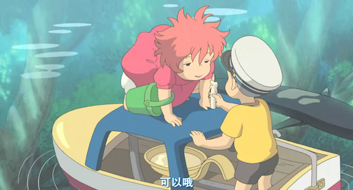

我是正常的盒子
我是怪异的盒子
 闭上眼睛,取回曾经忘记的恋曲隐藏在晴空,展开手臂,再一次,不要忘记,就在身边 有我在,不论哪一天,眺望着星空。即使只有一个人的凌晨,唯有一个的心灵 不要把它沉浸在忧伤中,你的叹息,我会让它变作春风。洒满阳光的坡路 骑着自行车冲上去，载着与你曾经失去的回忆上路，啦啦啦啦 哼起歌谣 嘴唇渐变红润，就像与你发现的幸福之花一样。敞开窗口，让曾经忘记的恋曲奔放而出 托付给晴空，扎起双手，再一次不会忘记 就在身边，有你在，不论哪一天，星空闪耀着 即使泪水转动的明天，只有这唯一的话语 抱紧在胸中，因为你 我现在 在被春风吹拂，洒满阳光的坡路 骑着自行车冲上去，载着与你曾经发过的誓言上路，啦啦啦啦 哼起歌谣 嘴唇渐变红润，就像在祝愿与你相遇的幸福，洒满阳光的坡路 骑着自行车冲上去 ，载着与你曾经发过的誓言上路，啦啦啦啦 哼起歌谣 嘴唇渐变红润 就像在祝愿与你相遇的幸福，就像在祝愿与你相遇的幸福。
我是旧弹性盒模型

我是弹性盒模型